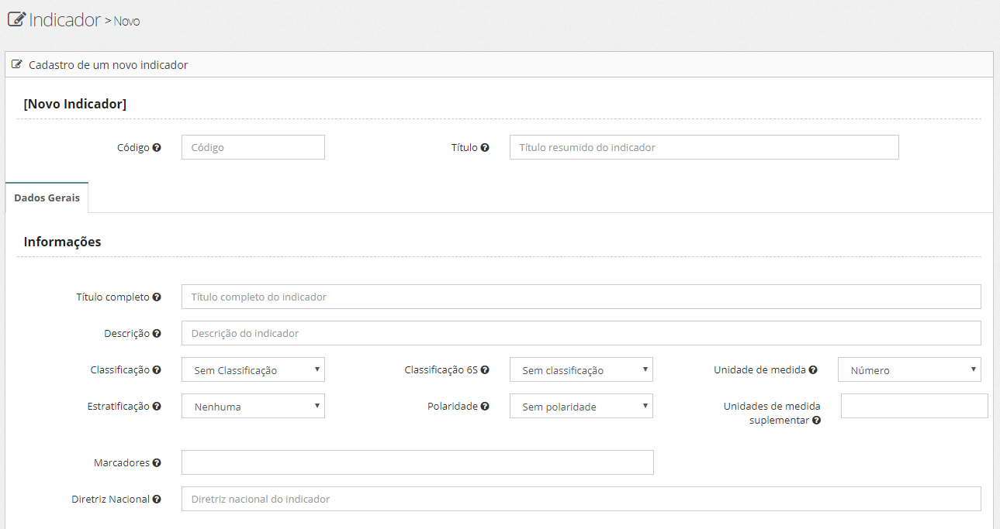
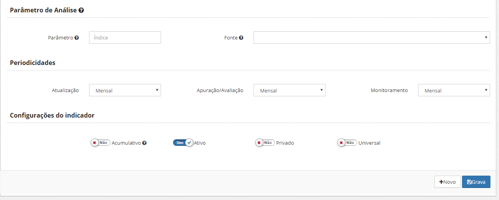
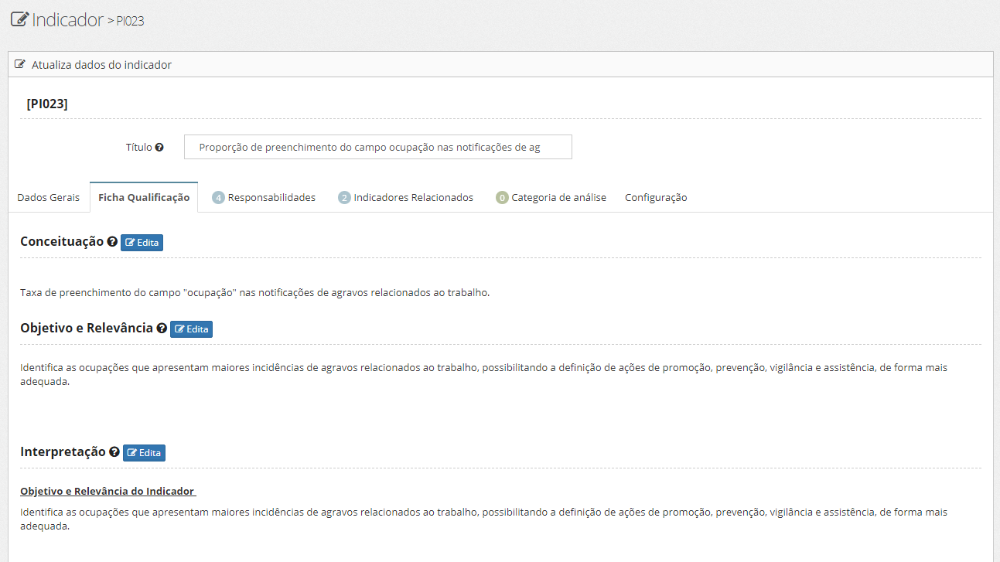
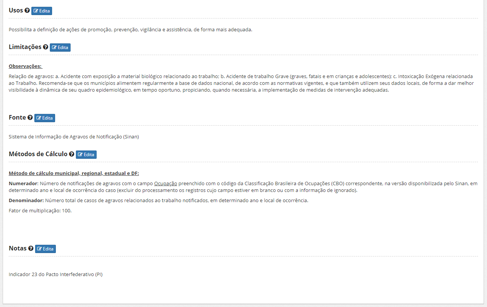
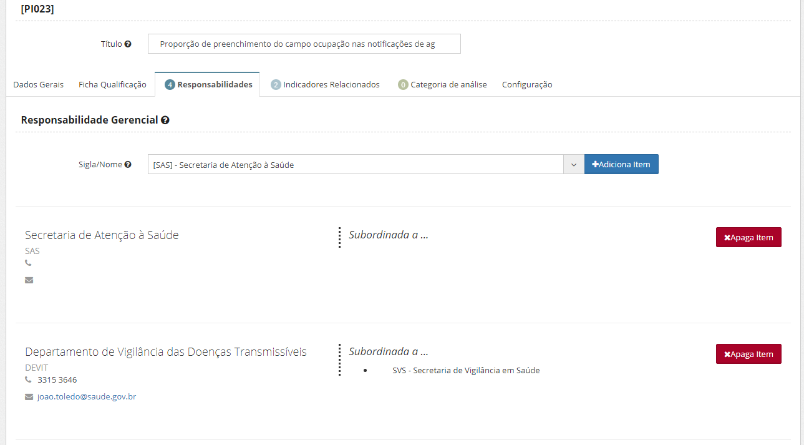
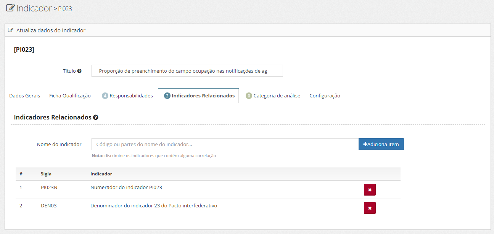
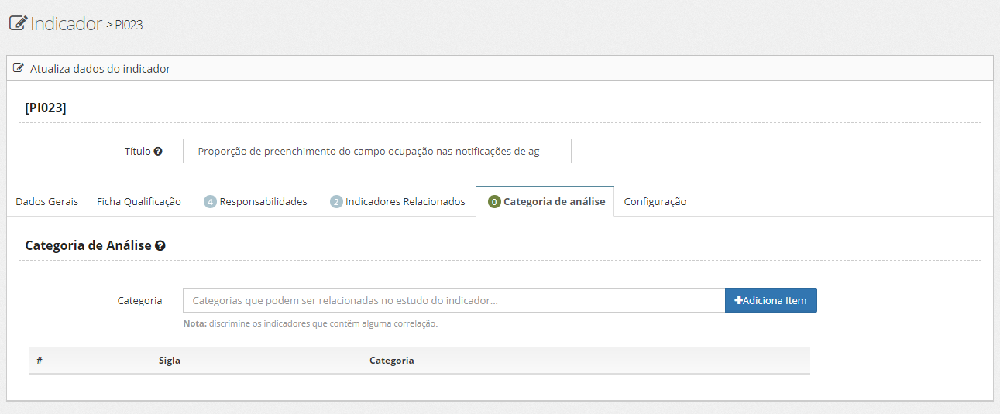
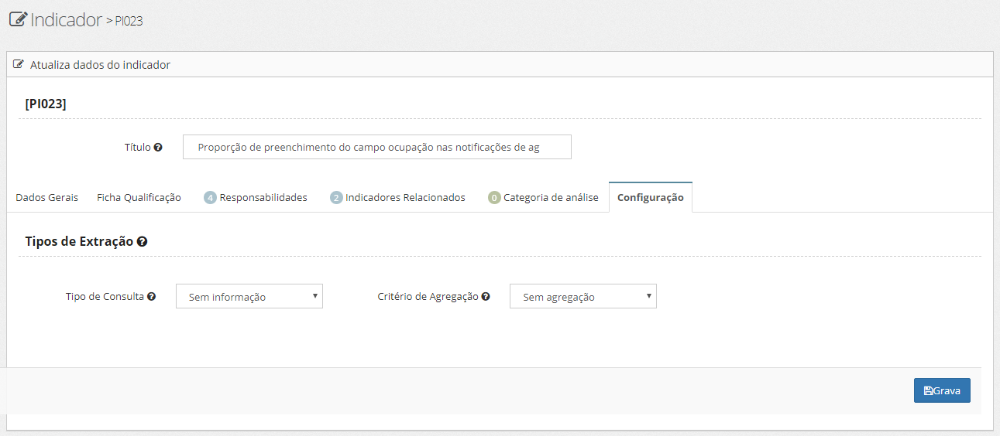

Uma vez logado no sistema, o usuário seleciona no menu “Indicadores" a opção "Novo indicador". A tela de dados gerais é apresentada.

O usuário preenche informações sobre os seguintes campos:
Código: O código de um indicador, servirá como referência deste indicador a todos os sistemas que farão uso deste. Possui as seguintes regras:
campo alfanumérico com 10 posições (começar com pelo menos uma letra).
não deve conter acentos ou caracteres especiais;
não deve conter espaços em branco.
Título: O título resumido de um indicador deverá possuir até 200 caracteres, apresentando um tamanho mínimo a ser utilizado em planilhas e afins. É fornecido pelo usuário.
Título completo: Este campo deverá ser preenchido caso haja necessidade de nomear um título maior a fim de explicar ou definir o indicador; trata-se de um campo opcional.
Descrição: Representa a descrição do indicador (máximo de 255 caracteres).
Classificação: na visão do Tribunal de Contas da União - TCU, o uso de indicadores na avaliação do programa de inclusão digital do governo federal possui 5 categorias. Vejamos:
Insumo (antes): são indicadores que têm relação direta com os recursos a serem alocados, ou seja, com a disponibilidade dos recursos humanos, materiais, financeiros e outros a serem utilizados pelas ações de governo. São exemplos médicos/mil habitantes e gasto per capita com educação;
Processo (durante): são medidas que traduzem o esforço empreendido na obtenção dos resultados, ou seja, medem o nível de utilização dos insumos alocados, como, por exemplo, o percentual de atendimento de um público alvo e o percentual de liberação dos recursos financeiros;
Produto (depois): medem o alcance das metas físicas. São medidas que expressam as entregas de produtos ou serviços ao público-alvo. São exemplos o percentual de quilômetros de estrada entregues, de armazéns construídos e de crianças vacinadas em relação às metas estabelecidas;
Resultado (depois): expressam, direta ou indiretamente, os benefícios no público-alvo decorrentes das ações empreendidas no contexto de uma dada política e têm particular importância no contexto de gestão pública orientada a resultados. São exemplos as taxas de morbidade (doenças), taxa de reprovação escolar e de homicídios;
Impacto (depois): possuem natureza abrangente e multidimensional, têm relação com a sociedade como um todo e medem os efeitos das estratégias governamentais de médio e longo prazos. Na maioria dos casos estão associados aos objetivos setoriais e de governo. São exemplos o Índice Gini de distribuição de renda e o PIB per capita.
Classificação 6Es: por sua vez o Ministério do Planejamento classificou os indicadores em 6 categorias. São assim definidas:
Efetividade são os impactos gerados pelos produtos/serviços, processos ou projetos. A efetividade está vinculada ao grau de satisfação ou ainda ao valor agregado, a transformação produzida no contexto em geral;
Eficácia é a quantidade e qualidade de produtos e serviços entregues ao usuário (beneficiário direto dos produtos e serviços da organização). Por exemplo, se, na mesma campanha citada, a meta de vacinação é imunizar 100.000 crianças, e, este número foi alcançado ou superado, a campanha foi eficaz;
Eficiência é a relação entre os produtos/serviços gerados (outputs) com os insumos utilizados, relacionando o que foi entregue e o que foi consumido de recursos, usualmente sob a forma de custos ou produtividade. Por exemplo: uma campanha de vacinação é mais eficiente quanto menor for o custo, ou seja, quanto menor for o custo da campanha, mantendo‐se os objetivos propostos;
Execução refere‐se à realização dos processos, projetos e planos de ação conforme estabelecidos;
Excelência é a conformidade a critérios e padrões de qualidade/excelência para a realização dos processos, atividades e projetos na busca da melhor execução e economicidade; sendo um elemento transversal. Indicadores e padrões de excelência podem ser encontrados no Instrumento de Avaliação da Gestão Pública (IAGP);
Economicidade está alinhada ao conceito de obtenção e uso de recursos com o menor ônus possível, dentro dos requisitos e da quantidade exigidas pelo input, gerindo adequadamente os recursos financeiros e físicos. Indicadores de economicidade podem ser encontrados nas unidades de suprimentos.
Unidade de Medida: refere-se a unidade de quantificação a ser utilizada/apresentada quando do resultado do indicador (número absoluto, percentual, por mil, por milhão, etc).
Estratificação: trata da estratificação geográfica para apresentação do dados do indicador. Seria o menor grão da informação.
Polaridade: Informativo para análise do indicador (maior-melhor, menor-melhor, etc). Serve para indicativo nos gráficos e nas análises dos dados dos indicadores.
Unidade de medida suplementar: descreve as unidades de medida suplementares relacionada ao indicador.
Marcadores: são marcadores genéricos que podem ser utilizados na classificação do indicador (por exemplo, planos que utilizam, indicativos de uso na transparência, etc).
Diretriz Nacional: relaciona a diretriz nacional com o indicador em cadastro.
Parâmetros de Análise: Utilizado opcionalmente para indicadores que possuem referência de valor previamente determinado internacionalmente, ou, por portaria. São eles:
Parâmetro - valor numérico para análise do valor do indicador;
Fonte - Fonte para o valor (normalmente a instituição/lei/portaria que determina/normatiza uma referência adotada para o indicador).
Periodicidade: No cadastro de novo indicador a periodicidade é composta por atualização, apuração/avaliação e monitoramento.
Configuração do indicador: São itens que configuram o indicador. O usuário deverá fazer referência marcando em ‘sim’ ou ‘não’. Estão assim discriminados:
Acumulativo Ocorrerá quando o resultado do indicador demonstra o somatório de ocorrências ao longo de um período de tempo. Em caso positivo, trata-se de um indicador que não zera, em nenhum período de mensuração; apenas se acumula, em termos de resultados medidos. Portanto, os dados mensais correspondem ao resultado do mês corrente somado aos meses anteriores. Faz-se necessário, neste tipo, especificar se o recorte é anual ou do início do programa até o mês de consolidação da informação. Em caso negativo, estará se assumindo que os dados apresentados representam o resultado do mês corrente.
Ativo
Privado
Universal
Ao finalizar o cadastro dos dados gerais, o usuário pressiona o botão. Os campos digitados são validados e o sistema cadastra o indicador na base de dados, liberando acesso à complementação dos dados nas outras abas que compõem o cadastro.
Desta forma, o cadastro de novo indicador está estruturado nas seguintes abas, abaixo especificadas.
Esta aba é composta de informações que qualificam um indicador.
Tais metadados são utilizados na conceituação, interpretação e, de igual modo, indicam a metodologia de cálculo para se chegar aos resultados desejados para aquele indicador.
A tela está estruturada da seguinte forma:


O usuário deverá preencher os campos abaixo assinalados:
Conceituação de indicadores: Trata-se de informações que definem o indicador e a forma como ele se expressa, se necessário agregando elementos para compreensão de seu conteúdo. Deve ser coerente como método de cálculo, unidade de medida, o tipo de relação com as variáveis, a temporalidade e a abrangência geográfica. O campo é descritivo.
Objetivo e relevância: Pontua dados relacionados a objetivos e relevância do indicador.
Interpretação: Refere-se a uma explicação sucinta do tipo de informação obtida e seu significado.
Usos: Apontam as principais finalidades de utilização dos dados a serem consideradas na análise do indicador.
Limitações: Corresponde aos fatores que restringem a interpretação do indicador, tanto em seu conceito quanto nas fontes utilizadas.
Fonte: Corresponde às instituições responsáveis pela produção dos dados utilizados no cálculo do indicador e os sistemas de informação a que correspondem. Ex. IBGE, SAS, SPO, etc.
Método de Cálculo: Refere-se à fórmula utilizada para calcular o indicador e os elementos que o compõem.
Notas: São notas e observações sobre o indicador.
Após o preenchimento de cada campo, o usuário deverá clicar em . Os campos digitados são validados e o sistema arquiva a qualificação do indicador na base de dados, liberando acesso ao preenchimento da próxima aba.
Essa aba identifica a unidade responsável a ser contactada, a qual responderá pelas informações do indicador.
Há 2 (dois) tipos de responsabilidade:
Responsabilidade gerencial: identifica a área responsável pela qualificação do indicador e sua ficha.
Responsabilidade técnica: identifica a área técnica responsável pelos dados divulgados.
A tela é assim apresentada:

O usuário deverá preencher o campo com o título e a sigla correspondente. Em seguida clicar em . O sistema valida as informações digitadas e a atribuição de responsabilidade aparecerá na listas relacionadas na tela.
Caso o usuário deseje apagar alguma atribuição de responsabilidade já validada pelo sistema, clicará em  na responsabilidade correspondente, e, a mesma deixará de constar da base de dados.
na responsabilidade correspondente, e, a mesma deixará de constar da base de dados.
Esta aba demonstra os indicadores relacionados ao acompanhamento de ações, programas e estratégias complementares a análise do problema.
A tela apresenta-se:

O usuário deverá preencher o título. Em seguida, escrever o nome do indicador e clicar em . O sistema valida as informações digitadas e o ítem passará a integrar a relação dos já adicionados.
Esta aba demonstra quais categorias são recomendadas para a análise do indicador com certo grau de correlação.
Observe a tela:

O usuário deverá preencher o título. Em seguida, escolher a categoria de análise e clicar em . O sistema valida as informações digitadas e o ítem passa a integrar a relação dos já enumerados em tela.
Ressalta-se que a identificação da categoria de análise em forma de código deverá conter até 8 caracteres; já o título da categoria de análise deverá ser o menor possível para já utilização em planilhas, gráficos e afins, até o limite de 255 caracteres.
Esta aba traduz a configuração de novo indicador pelo tipo de extração, uma ficha técnica com informações dos dados originais do indicador.
A tela assim se apresenta:

O usuário deverá preencher o título (limite de 200 caracteres). Em seguida, escolher o tipo de extração.
Extração refere-se ao procedimento a ser seguido para extração dos dados. Compõem os tipos de extração de metadados de indicadores o tipo de consulta (ETL, Query, importação) e o critério de agregação para dados do indicador.
Logo após, o usuário escolhe o critério de agregação, e clica no botão . O sistema valida as informações digitadas e armazena o indicador com suas especificações.
Após a gravação do indicador no banco de dados, o usuário tem a opção de realizar novo cadastro de indicador clicando no botão .